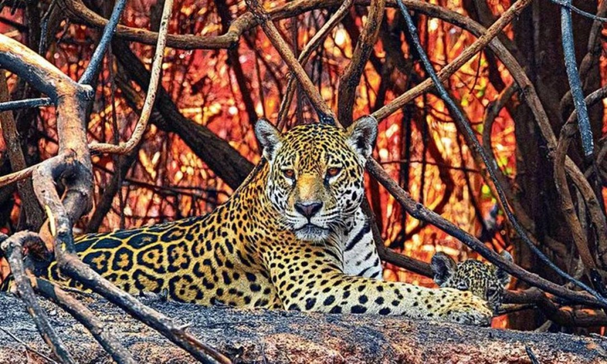

Impacto nos habitantes
As queimadas no Brasil têm um impacto devastador na vida dos habitantes, principalmente em áreas
da
Amazônia e do Pantanal. Além de causar a destruição de vastas áreas de floresta e a perda de
biodiversidade, essas queimadas afetam diretamente as comunidades locais. A fumaça tóxica
prejudica
a qualidade do ar, aumentando casos de doenças respiratórias, especialmente entre crianças e
idosos.
Agricultores e ribeirinhos enfrentam a destruição de suas terras e a escassez de recursos
naturais,
como água e alimentos, enquanto comunidades indígenas perdem seus territórios e modos de vida.
Além
disso, as queimadas agravam as mudanças climáticas, o que pode gerar ainda mais insegurança para
as
populações em longo prazo.
Quem são os mais afetados?

Onça-pintada com seu filhote em meio a vegetação queimada e chamas ás
margens
do Rio Três Irmãos, no Pantanal Mato-grossense Foto: Daniel De Granville/fotoarena/3-10-2020
As comunidades indígenas, que dependem diretamente da floresta para sua subsistência, enfrentam a
destruição de seus habitats naturais, o que compromete o acesso a alimentos, remédios e materiais
para moradia. A perda desses recursos os força a se deslocar e, muitas vezes, a perder suas
tradições e modos de vida. As queimadas também agravam o processo de marginalização dessas
comunidades, que ficam ainda mais vulneráveis em um cenário de degradação ambiental.
Os animais que habitam as florestas, como onças, macacos, aves e répteis, sofrem com a destruição de
seu habitat. Muitos tentam escapar das chamas, mas acabam mortos pelo fogo ou pela falta de
alimentos e abrigo. A perda de habitats naturais também coloca em risco várias espécies,
especialmente aquelas já ameaçadas de extinção, diminuindo a biodiversidade e afetando o equilíbrio
ecológico das regiões afetadas.
As queimadas não apenas destroem a natureza, mas também afetam profundamente a saúde e o
modo de vida das pessoas, animais e povos indígenas, causando um ciclo de sofrimento e perda para
todos que dependem da floresta.